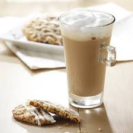
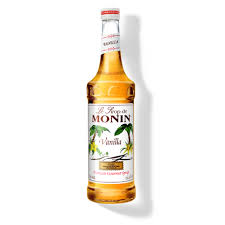

Receta para preparar Vainilla latte

A continuacion se enumeran los pasos los ingredientes para preparar un delicioso Vainilla latte
Ingredientes
- Una cucharada de cafe molido para cafetera
- Agua al gusto
- Leche al gusto
- Media cucharada de esencia de vainilla
- Azucar o endulzante al gusto (opcional)

Preparación
- Vierte el cafe molido dentro de la cafetera de manera habitual
- Una vez que tengas que el café listo, viertelo en una taza grande y agrega la leche al gusto, mezclalo
- Una vez que tengas la mezcla, agrega la media cuchara de esencia de vainilla, mezcla nuevamente
- Agrega azúcar o endulzante al gusto
- Disfruta